UPX 2 – DESENVOLVIMENTO DE PROJETO · ANÁLISE E DESENVOLVIMENTO DE SISTEMAS
📚 BookSwipe Sustentável
Rede social de experiências de leitura e troca de livros físicos entre estudantes
Entrega: Telas Reais do Sistema e Landing Page
Código do grupo:
Grupo SO NÓS
Integrantes:
Lucas Amado – RA 263281 Yan Sumi – RA 263423 Nicolas Leon – RA 263164 Matheus Freitas – RA 263627
Professor orientador:
Prof. Eliney Sabino
Sorocaba – SP · Outubro de 2026
1. Apresentação
Este documento apresenta as telas reais do BookSwipe Sustentável, já implementadas e funcionando, e a sua Landing Page. Não usamos protótipo no Figma: todas as imagens são capturas do sistema rodando, com o site (HTML, CSS e JavaScript) consumindo a API própria em Java (Javalin), que lê e grava os dados no banco MySQL. Os dados que aparecem nas telas são dados de teste cadastrados no banco.
O BookSwipe resolve dois problemas observados entre colegas da faculdade: livros que, depois de lidos, ficam parados na estante, e a falta de um espaço para descobrir leituras e conversar sobre elas. A plataforma junta uma rede social de experiências de leitura (com curtidas, comentários e “match” por afinidade literária) e um marketplace de troca de livros físicos, medindo o impacto em indicadores de reuso (ODS 4 – Educação de Qualidade e ODS 12 – Consumo e Produção Responsáveis).
1.1 Identidade visual
A paleta segue o protótipo inicial do grupo: fundo creme #F7F5F0 (lembra papel de livro), verde-escuro #1B3A2F para títulos e destaques, verde #4CAF7D para ações positivas e sustentabilidade, e laranja #E67E3E para chamadas principais (como “Publicar” e “Começar agora”). A fonte da interface é a Poppins. Todas as telas têm o mesmo menu lateral, para o usuário saber sempre onde está.
1.2 Mapa das telas e fluxo de navegação
Visitante: Landing Page → Entrar (Login) ou Começar agora (Cadastro em 2 etapas: dados → gêneros favoritos) → Início Usuário logado (menu lateral): Início · Descobrir · Minha estante · Matches · Trocar livros · Meu impacto · Perfil · botão Publicar Caminho social: Descobrir (curtir/pular) → Comentários → Página do livro → Publicar experiência → aparece no feed dos colegas → Matches Caminho da troca: Trocar livros → Ver livro → Solicitar troca → dono aceita em “Pedidos recebidos” → troca concluída → conta em Meu impacto
Tela
Funcionalidade principal
Necessidade atendida
Landing Page
Apresenta a proposta, “Como funciona” e o número real de livros reutilizados
Atrair e explicar o projeto
Login / Cadastro
Acesso seguro (senha com hash e token de sessão) e escolha de gêneros
Identificar o aluno
Início
Resumo pessoal, livros em alta, sugestão e “continue lendo”
Ponto de partida rápido
Descobrir
Cards de experiências no estilo “swipe”
Descobrir o que ler
Comentários
Conversa sobre uma experiência
Interação social
Página do livro
Sinopse, nota média e experiências do livro
Decidir a próxima leitura
Publicar
Nota, sentimento, trecho favorito e resenha; busca na internet
Compartilhar a experiência
Minha estante
Lendo, lidos, quero ler e favoritos
Organizar as leituras
Matches
% de afinidade com outros leitores
Conectar pessoas
Trocar livros
Marketplace, pedidos enviados e recebidos
Reuso de livros físicos
Meu impacto
Indicadores de reuso e engajamento
Medir a sustentabilidade
Perfil
Dados públicos, gêneros e experiências
Identidade do leitor
2. Landing Page
Figura 1 – Landing Page do BookSwipe (desktop). Fonte: autoria própria (2026).
Funcionalidade: é a primeira página que o visitante vê. Traz a frase principal “Livros foram feitos para circular.”, o botão Começar agora (leva ao cadastro) e o botão Entrar (leva ao login). A seção Como funciona? explica o uso em três passos: Descubra, Compartilhe e Troque.
Necessidade atendida: o contador “livros já reutilizados pela comunidade” não é um número fixo: ele vem da API (rota pública de indicadores), então a própria Landing Page mostra o impacto sustentável real do projeto. O rodapé liga o projeto aos ODS.
3. Acesso: Login e Cadastro
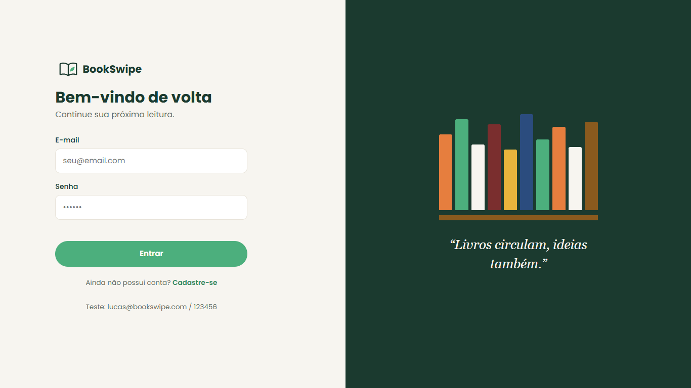
Figura 2 – Tela de login. Fonte: autoria própria (2026).
Funcionalidade: o aluno entra com e-mail e senha. A senha é conferida no servidor com hash BCrypt (nunca é guardada em texto puro) e a API devolve um token de sessão válido por 7 dias, que o site envia em todas as requisições. Mensagens de erro aparecem na própria tela.
Funcionalidade: o cadastro é dividido em duas etapas para não cansar o usuário. Na primeira, nome, e-mail, senha (mínimo de 6 caracteres), curso e bairro; na segunda, o aluno escolhe seus gêneros favoritos.
Necessidade atendida: os gêneros escolhidos alimentam o cálculo de match desde o primeiro acesso, e o bairro ajuda a combinar trocas com colegas que moram perto.
4. Início
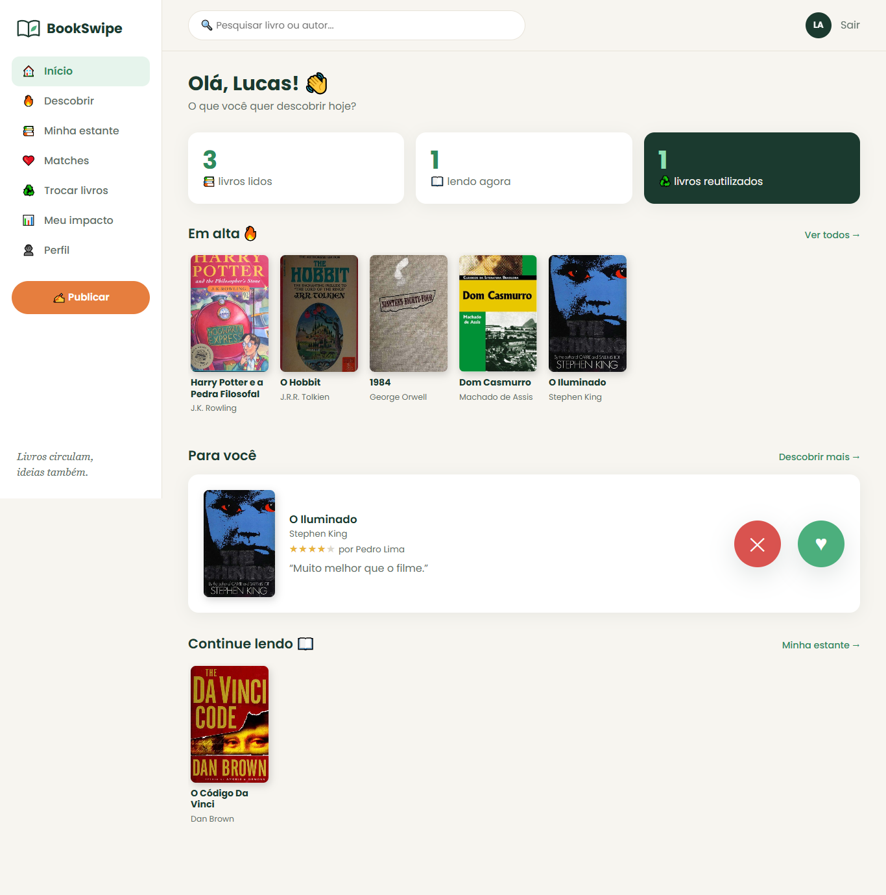
Figura 5 – Tela inicial do usuário logado. Fonte: autoria própria (2026).
Funcionalidade: resume a vida de leitor em três números (livros lidos, lendo agora e livros reutilizados), mostra os livros Em alta, uma experiência Para você que já pode ser curtida (♥) ou pulada (✕) ali mesmo, e o atalho Continue lendo. A barra de pesquisa no topo busca livro ou autor em qualquer tela.
Necessidade atendida: o aluno chega e já tem o que fazer, sem precisar procurar no menu.
5. Parte social: Descobrir, Comentários, Livro e Publicar
Figura 6 – Descobrir (card de experiência). Fonte: autoria própria (2026).
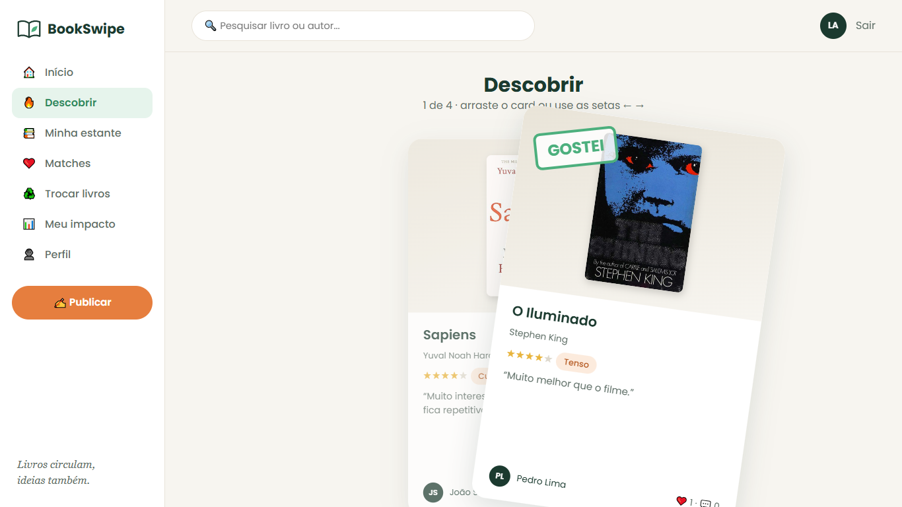
Figura 7 – Descobrir, card sendo arrastado. Fonte: autoria própria (2026).
Funcionalidade: é o coração do “Tinder de livros”. Cada card é a experiência de um colega: capa, título, autor, nota em estrelas, sentimento (ex.: “Tenso”) e o comentário. O usuário arrasta o card para a direita para curtir ou para a esquerda para pular (também funciona com as setas do teclado e com o dedo, no celular). O sistema só mostra experiências que o usuário ainda não avaliou e nunca mostra as dele mesmo.
Necessidade atendida: resolve “não saber o que ler a seguir” com recomendações de colegas reais, de um jeito rápido e divertido.
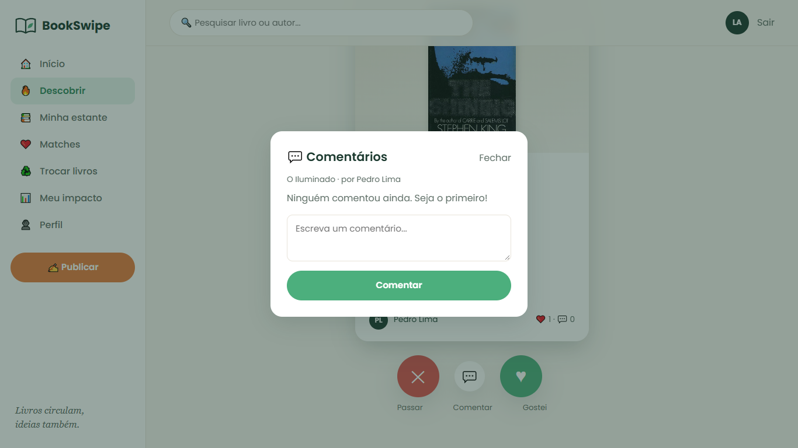
Figura 8 – Comentários de uma experiência. Fonte: autoria própria (2026).
Funcionalidade: abre a conversa sobre uma experiência: o usuário lê o que os colegas disseram e escreve o próprio comentário.
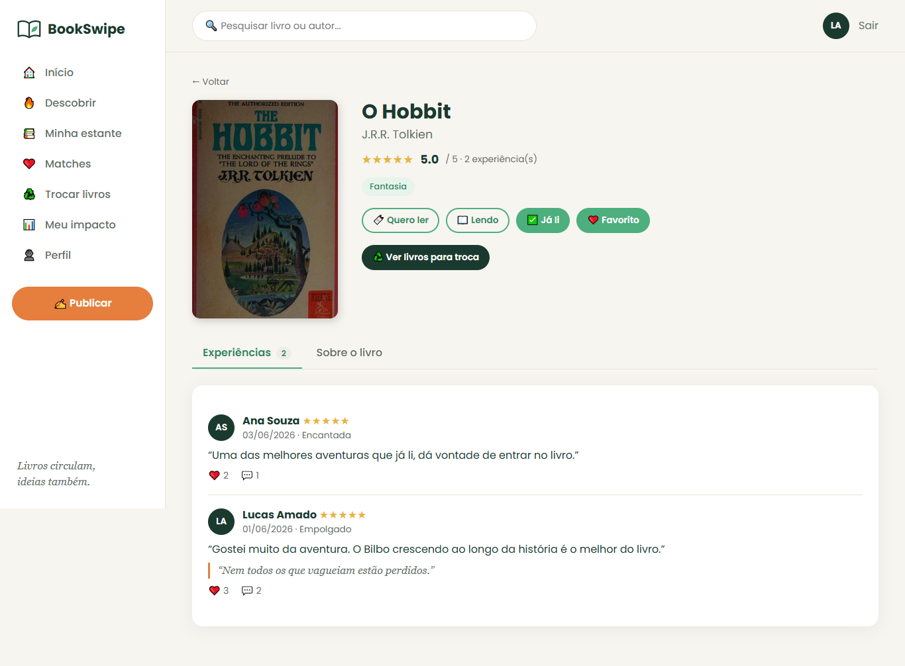
Figura 9 – Página do livro. Fonte: autoria própria (2026).
Funcionalidade: reúne tudo sobre um livro: capa, sinopse, gênero, nota média e todas as experiências publicadas sobre ele. Daqui o usuário coloca o livro na estante (quero ler, lendo, lido) ou publica a própria experiência.
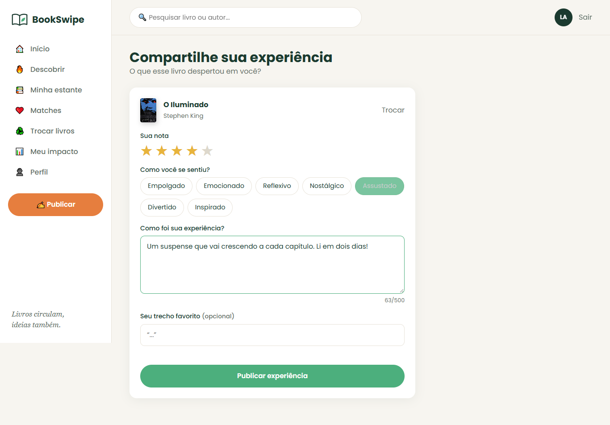
Figura 10 – Publicar experiência de leitura. Fonte: autoria própria (2026).
Funcionalidade: o usuário escolhe o livro, dá a nota em estrelas, marca como se sentiu (Empolgado, Emocionado, Reflexivo, Assustado…), escreve a experiência (até 500 caracteres) e, se quiser, o trecho favorito. Ao publicar, o livro vai automaticamente para a estante como Lido. A regra de negócio permite uma experiência por livro para cada usuário.
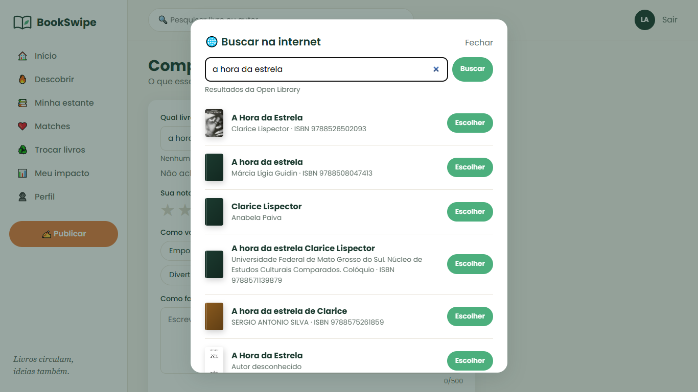
Figura 11 – Busca de livros na internet (API Open Library). Fonte: autoria própria (2026).
Funcionalidade: se o livro ainda não existe no sistema, o usuário pesquisa pelo título e o BookSwipe busca os dados numa API pública de livros (Open Library; o código também está pronto para o Google Books). Com um clique, título, autor, sinopse e capa são importados.
Necessidade atendida: evita digitar tudo à mão e deixa o catálogo com capas reais.
6. Minha estante e Matches
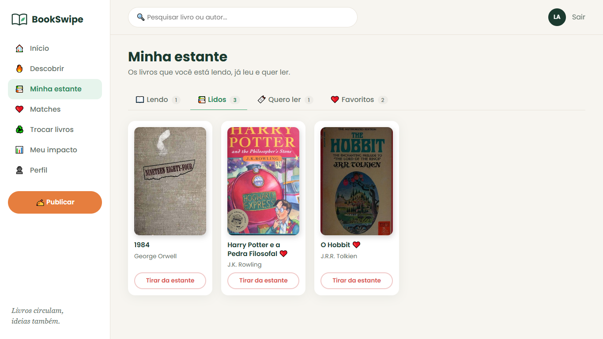
Figura 12 – Minha estante. Fonte: autoria própria (2026).
Funcionalidade: organiza os livros em quatro abas com contador: Lendo, Lidos, Quero ler e Favoritos (♥). O botão “Tirar da estante” remove o livro da lista.
Figura 13 – Matches literários. Fonte: autoria própria (2026).
Funcionalidade: mostra os leitores mais parecidos com o usuário, com a porcentagem de afinidade, os livros e os gêneros em comum. O cálculo usa o índice de Jaccard: livros em comum (lidos ou favoritos) valem 60% e gêneros favoritos em comum valem 40%. A explicação aparece no rodapé da tela, para ser transparente. Por privacidade, o match mostra só o perfil público (sem e-mail).
7. Trocar livros
Figura 14 – Marketplace de livros para troca. Fonte: autoria própria (2026).
Funcionalidade: lista os livros físicos que os colegas colocaram para circular, com filtro por gênero e pesquisa. Cada card mostra a condição do exemplar (Novo, Boa, Regular), o bairro e o dono. As abas separam os livros disponíveis, os pedidos recebidos, os meus pedidos e o formulário Oferecer livro.
Necessidade atendida: dá destino útil a livros parados, sem custo: é o módulo de sustentabilidade do projeto.
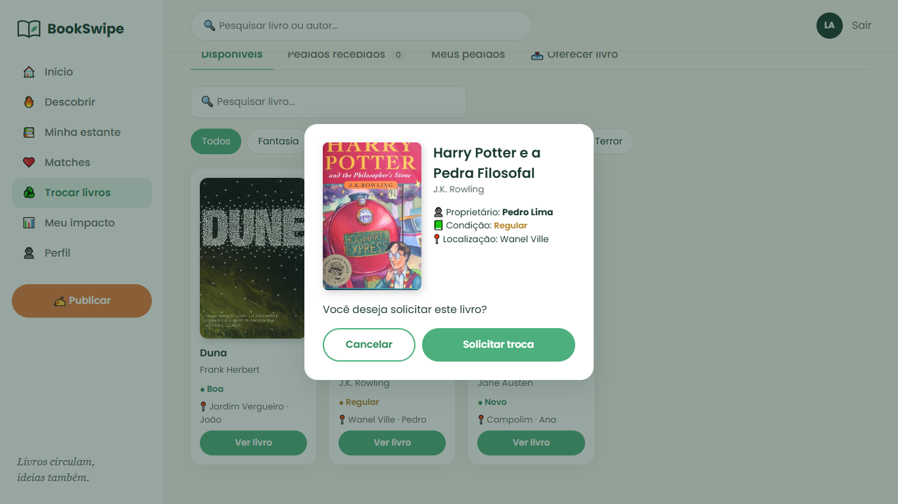
Figura 15 – Detalhes do livro e confirmação da solicitação. Fonte: autoria própria (2026).
Funcionalidade: antes de pedir, o usuário confere proprietário, condição e localização e confirma a solicitação.
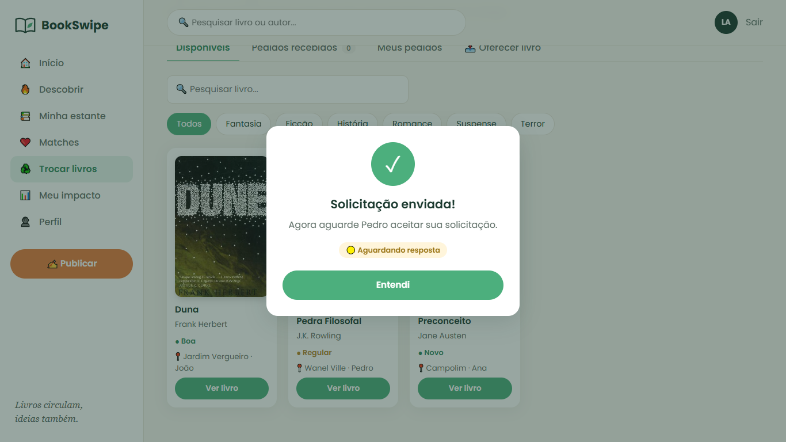
Figura 16 – Solicitação de troca enviada. Fonte: autoria própria (2026).
Funcionalidade: o sistema confirma o envio e o pedido passa a aparecer em “Meus pedidos”, com o status Aguardando resposta.
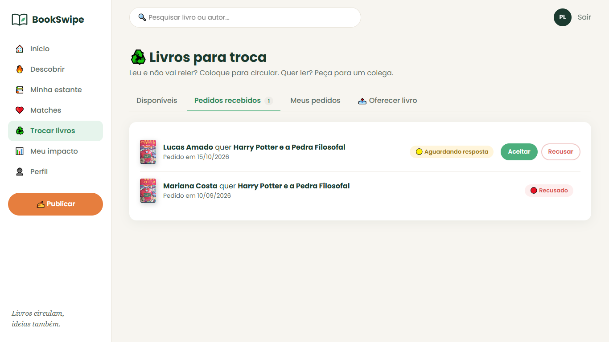
Figura 17 – Pedidos recebidos pelo dono do livro. Fonte: autoria própria (2026).
Funcionalidade: o dono do livro aceita ou recusa cada pedido e, depois da entrega em mãos, marca a troca como concluída. As regras de negócio ficam no servidor: ninguém pede o próprio livro, não dá para pedir duas vezes o mesmo livro, e ao aceitar um pedido o livro sai do marketplace. Cada troca concluída entra nos indicadores de reuso.
Funcionalidade: painel de indicadores calculados no banco: livros reutilizados pelo usuário e pela comunidade, taxa de reuso (trocados ÷ oferecidos), engajamento (interações por experiência), gráfico de livros reutilizados por mês, ranking de quem mais troca, gêneros mais lidos e livros em alta.
Necessidade atendida: torna mensurável o objetivo sustentável do projeto e motiva o aluno a continuar trocando.
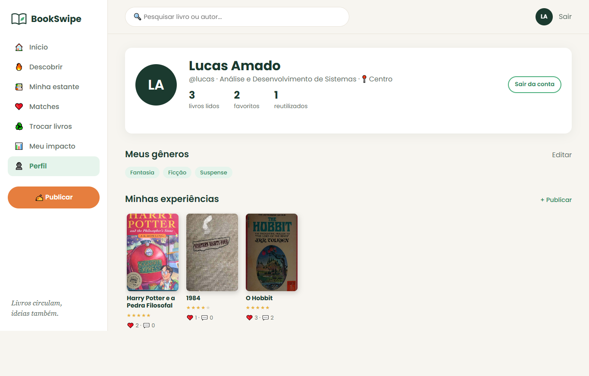
Figura 19 – Perfil do usuário. Fonte: autoria própria (2026).
Funcionalidade: mostra curso, bairro, os números do leitor (livros lidos, favoritos e reutilizados), os gêneros favoritos (que podem ser editados) e as experiências publicadas, com curtidas e comentários de cada uma.
9. Versão para celular (responsiva)
O site se adapta a telas pequenas (teste feito com 390 px de largura, tamanho de um celular comum). O menu lateral vira um menu que abre pelo botão do topo, os cards ocupam a largura toda e o swipe do Descobrir funciona com o dedo.
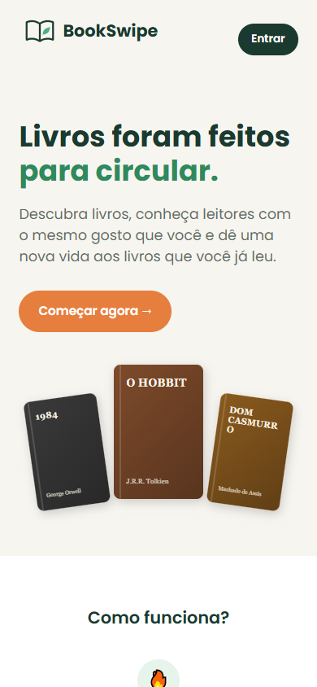
Figura 20 – Landing Page no celular. Fonte: autoria própria (2026).
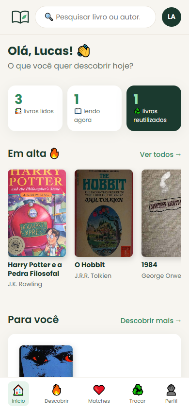
Figura 21 – Início no celular. Fonte: autoria própria (2026).
Figura 22 – Descobrir no celular. Fonte: autoria própria (2026).
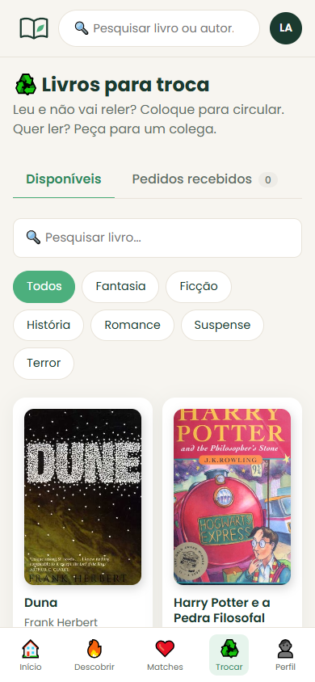
Figura 23 – Trocas no celular. Fonte: autoria própria (2026).
10. Testes e ajustes realizados
Até esta entrega, as telas ainda não foram testadas com usuários externos. Os testes foram feitos pela própria equipe, navegando pelos fluxos completos (cadastro, publicação, swipe, comentários, solicitação e conclusão de troca) no computador e no tamanho de celular, e com testes automatizados de navegador. A partir desses testes fizemos os seguintes ajustes:
Capas que não carregavam: quando a imagem da capa falha, o site desenha automaticamente uma capa com o título e o autor, para o card não ficar vazio.
Swipe no celular: o arrastar foi refeito para funcionar tanto com mouse quanto com o dedo, e ganhou o atalho das setas do teclado.
Menu no celular: o menu lateral não cabia em 390 px e passou a abrir por um botão.
Cadastro em duas etapas: separamos os dados pessoais da escolha de gêneros para o formulário não ficar longo demais.
Segurança: as senhas passaram a ser guardadas com hash e o acesso passou a usar token de sessão, impedindo que um usuário altere dados de outro.
Catálogo de livros: a API do Google Books bloqueou as buscas sem chave (limite de uso), então trocamos para a Open Library, mantendo o Google Books como opção.
Próximos passos
Aplicar um teste de usabilidade com colegas da turma e com a bibliotecária (persona do projeto), coletando as impressões num formulário curto, e implementar as notificações de novos pedidos de troca.